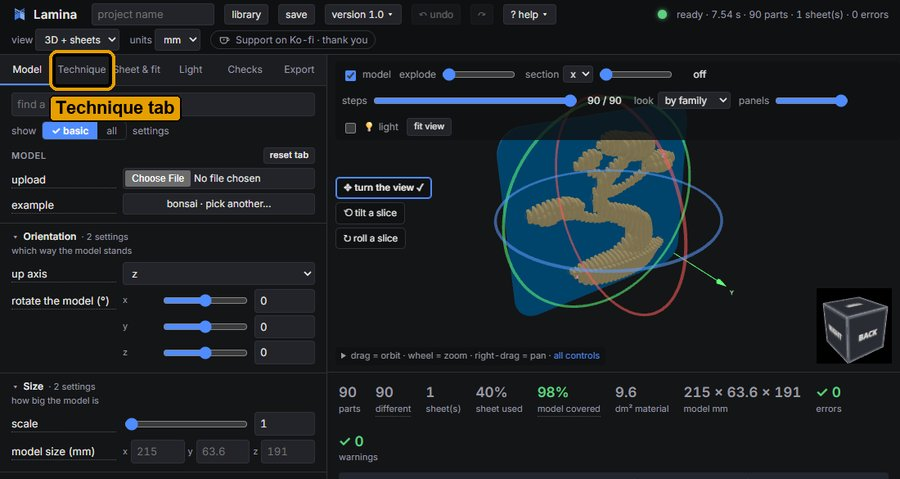
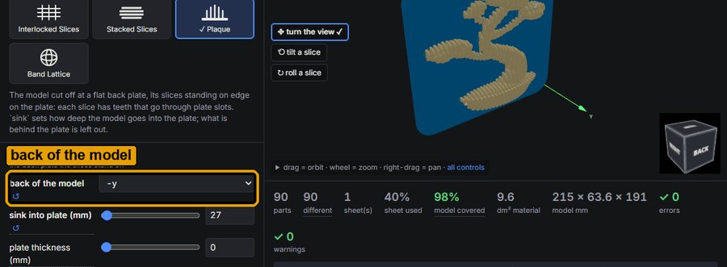
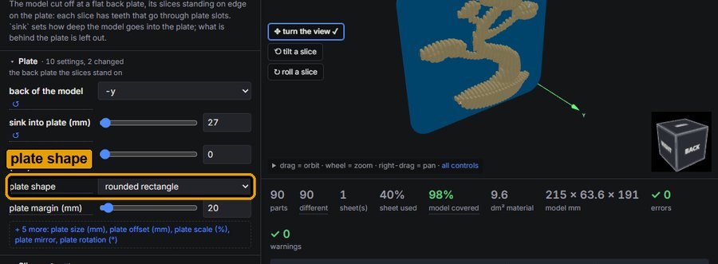
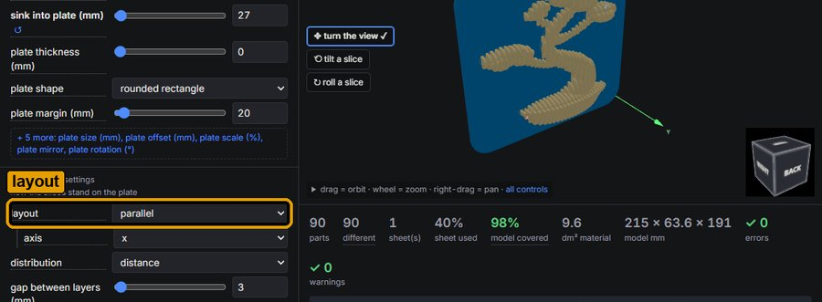
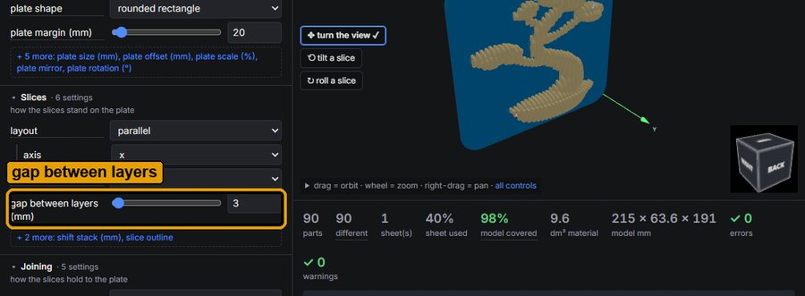
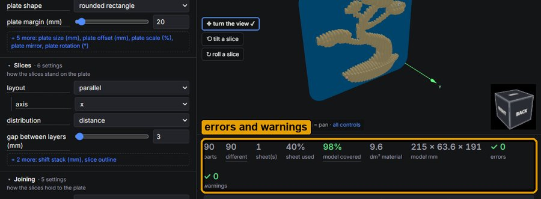
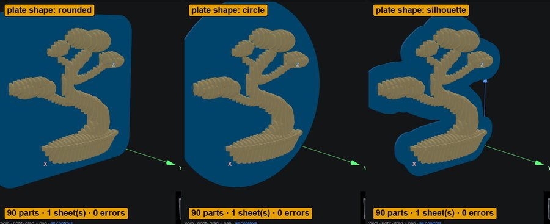
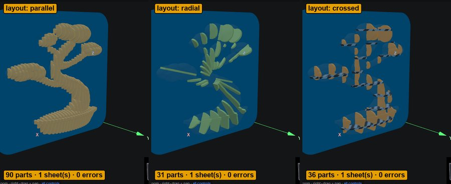
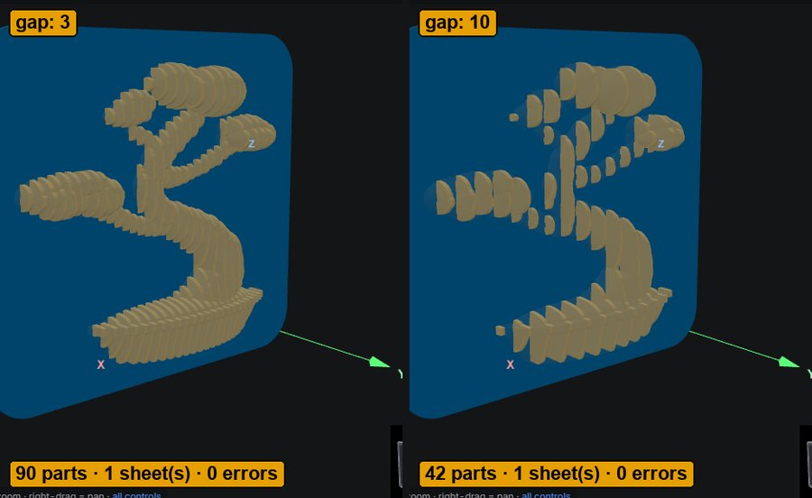

How to make a wall plaque from a 3D model
The model is cut off at a flat back plate. Its slices stand on edge on the plate, and each slice has teeth that go through slots in the plate. The result hangs on a wall. This guide uses Lamina, a free laser slicer that runs in your browser.
- 1. Start hereThe steps every job has: your model, its size, the checks, the files. Open
- 2. Your machineLaser, router or 3D printer, the material and its thickness. Open
- 3. Your technique: this pageThe settings of Plaque, and what each one changes.
Which shapes work
Reliefs, and models with one good side. What is behind the plate is left out. For the same model as a free-standing pile of layers, see stacked slices.
Set the technique
Every picture on this page shows one model: the bonsai that the link opens. An orange ring with a label marks the control to use. To use your own model, upload it on the Model tab: Start here shows how.
- Open Lamina on Plaque. It opens with the bonsai as a plaque. Click the Technique tab.

- Set back of the model to the side that goes against the plate. The model sticks out of the plate the other way.

- In plate shape, pick the outline of the plate.

- In layout, pick how the slices stand on the plate: side by side, as a fan, or as two families that cross.

- In gap between layers (mm), type the space between two slices.

- Read the errors and warnings under the 3D view after each change. The buttons under a message fix it.

What each setting changes
Each picture shows the same bonsai from the same side, with one setting changed. The label at the bottom gives the counts that Lamina shows under the 3D view.
plate shape
The outline of the back plate. silhouette is the shadow of the model on the plate, made larger by the plate margin.
It changes the plate only. The slices stay the same: 90 parts with each shape on this bonsai.

layout
How the slices stand on the plate. parallel: side by side. radial: a fan of half-slices round a centre. crossed: two families at right angles, slotted into each other.
It changes the look and the number of parts: 90 parts parallel, 31 parts radial, and 36 parts crossed on this bonsai. Each layout shows its own settings under it.

gap between layers
The empty space between two slices that stand side by side.
A larger gap gives fewer slices, and more of the plate shows between them: 90 parts at 3 mm, 42 parts at 10 mm.

More settings
| Setting | What it does | It changes |
|---|---|---|
| plate margin | How far the plate reaches past the model all round. | The size of the plate. |
| plate thickness | The thickness of the plate's material. | It is also the length of the teeth: they end flush with the back of the plate. At 0, the plate is the same material as the slices. |
| floating pieces | join: a piece of a slice that does not reach the plate hangs from the slice beside it. keep: nothing is left out. | With join, a piece that no neighbour can hold is left out, and the notes list it. |
| into the plate first | With crossed: the family that goes into the plate first. | The other family drops onto it one slice at a time. Put the family with fewer slices first. |
| plate file | With file as the plate shape: your own outline from an SVG or DXF file. | Closed shapes inside the outline are cut out of the plate, for a hanging hole or an ornament. |
Then: the machine, the checks and the files
These steps are the same for every technique, so they have their own pages.
- On the Sheet & fit tab, choose your machine, your material and its thickness: Laser, router or 3D printer.
- Correct every error, cut the fit test, and download the files: Start here, steps 10 to 13.
- Push the teeth of each slice through its slots in the plate. The teeth end flush with the back.